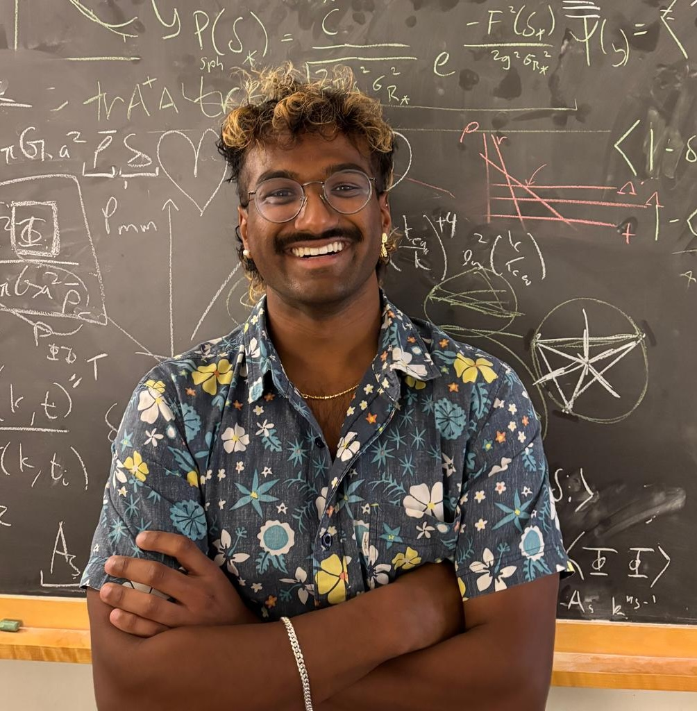

Contact me: msarav 'at' uw.edu
Pronouns: he/him
Ph.D. Candidate
Department of Physics
University of Washington
Seattle, Washington 98195
U.S.A.
I'm a Ph.D. candidate in the Department of Physics at the University of Washington, Seattle, working with Prof. Marilena Loverde. My research focuses on how cosmological data — from the CMB, large-scale structure, and beyond — can be used to probe physics beyond the Standard Model, and on how to holistically interpret the resulting constraints.
This website was built with Claude Code.